keine lokale Homeomorphie zwischen reeller Gerade und euklidischem Raum
1. Satz
Seien die euklidische räume  und 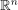 für
und 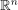 für  gegeben, dann folgt, dass und nicht lokal homeomorph sind.
gegeben, dann folgt, dass und nicht lokal homeomorph sind.
2. Beweis
o.B.d.A. für  , die Beweisidee funktioniert analog für .
Angenommen es existiere ein lokaler Homeomorphismus 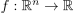.
Sei
, die Beweisidee funktioniert analog für .
Angenommen es existiere ein lokaler Homeomorphismus 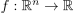.
Sei  und eine beliebige Umgebung - o.B.d.A. 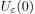 gegeben, dann existieren überabzählbar viele, bis auf den Start und Endpunkt disjunkte, Wege von 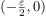 nach 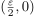:
Beispielsweise durch 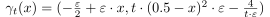 für
und eine beliebige Umgebung - o.B.d.A. 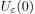 gegeben, dann existieren überabzählbar viele, bis auf den Start und Endpunkt disjunkte, Wege von 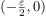 nach 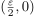:
Beispielsweise durch 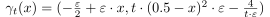 für  .
.
Betrachte man den Weg für 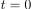, so gilt 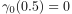 und wegen der Injektivität und Stetigkeit folgt o.B.d.A. 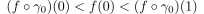.
Dabei existiert aber nach dem einfachen Zwischenwertsatz kein Weg, welcher nicht durch 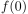 geht, was ein Widerspruch zu den Überabzählbar vielen, bis auf Endpunkte disjunkte Wegen in 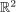 und der lokalen Injektivität von  ist.
ist.